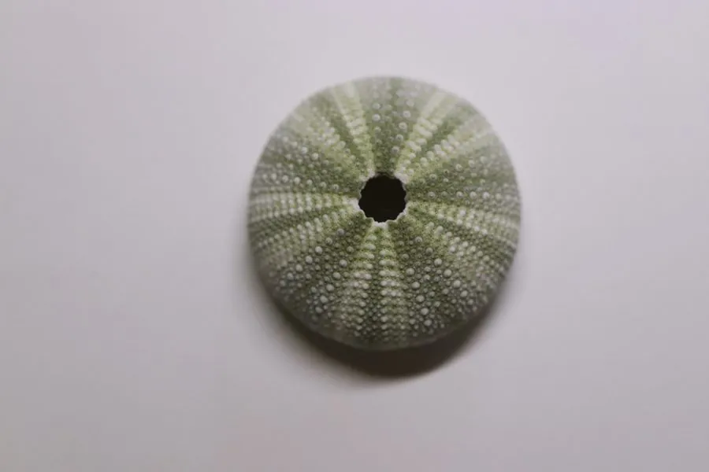

其他无脊椎动物 · 动物界
马粪海胆 Hemicentrotus pulcherrimus

中国北方和日本常见的食用海胆，壳径约 4 cm，棘短而密集，生殖腺可食用，是重要的渔业资源。
- 分类
- 门棘皮动物门纲海胆纲目拱齿目科球海胆科属马粪海胆属
- 栖息环境
- 潮间带至浅海的岩礁区，白天藏身礁缝
- 地理分布
- 中国北方沿海、日本和朝鲜半岛沿岸
- 保护级别
- 暂无评估；重要渔业资源
物种志
马粪海胆的壳呈半球形，壳径约 3–5 cm，表面密布短而粗的棘刺，颜色多为暗绿、黑绿或紫褐色，棘刺长度与壳径相近，整体看上去像一个深色的小刺球。它的口部有亚里士多德提灯，用来刮食海藻。
它生活在潮间带至浅海的岩礁区，白天藏在礁缝和石洞中，夜间出洞取食褐藻、绿藻和红藻。马粪海胆在中国北方沿海和日本很常见，是重要的食用海胆，生殖腺即海胆黄，味道鲜美，价格较高。捕捞和养殖是该地区的重要渔业之一；海胆数量过多时会啃光海藻，形成海胆荒，影响珊瑚礁和藻场的生态平衡，因此需要科学管理采捕强度。它的壳和棘刺也常被冲上海滩，成为海滩上的自然物。
形态与习性
- 食性刮食褐藻、绿藻和红藻
- 壳径约 3–5 cm
- 棘刺短而粗，颜色暗绿或紫褐
- 栖息潮间带至浅海岩礁区，昼伏夜出
- 经济海胆黄可食，是重要渔业资源
- 生态数量过多会啃光海藻，形成海胆荒
趣味知识
- 马粪海胆的棘刺短而密集，颜色深，看起来像个小刺球。
- 它的生殖腺就是海胆黄，是日本和我国北方的名贵海产。
- 海胆数量过多时会把海藻啃光，形成光秃秃的海胆荒。